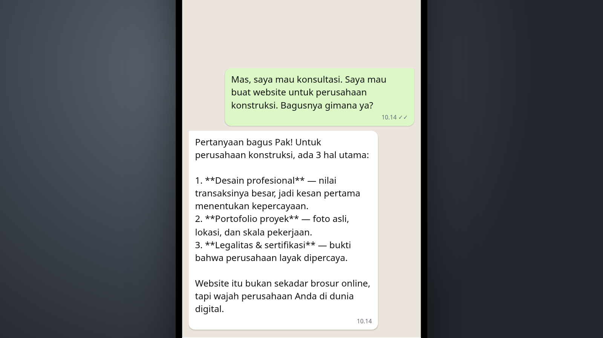
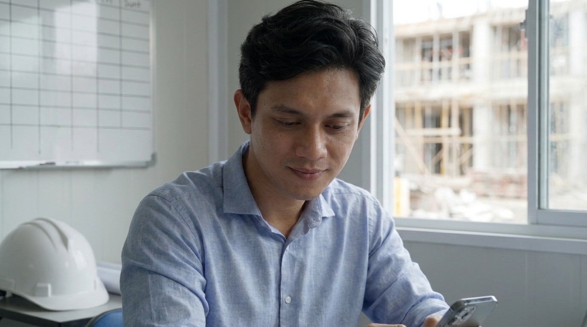
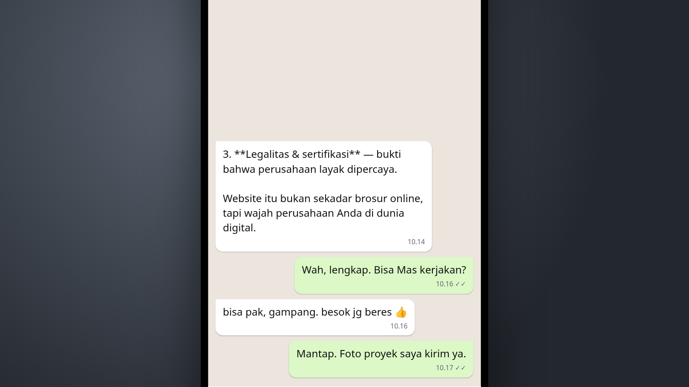
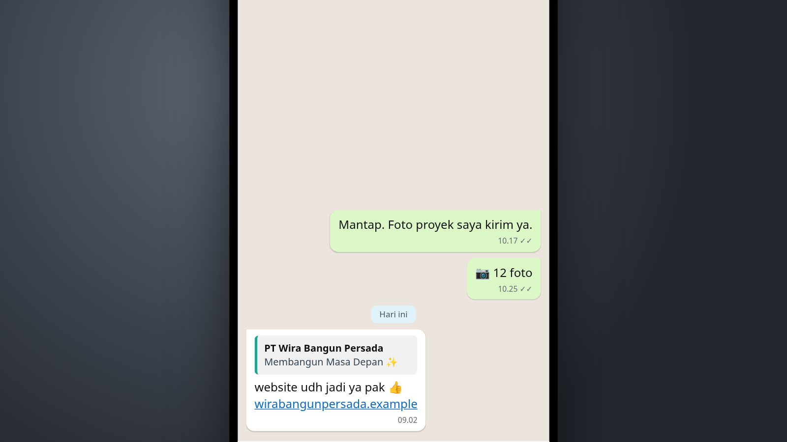
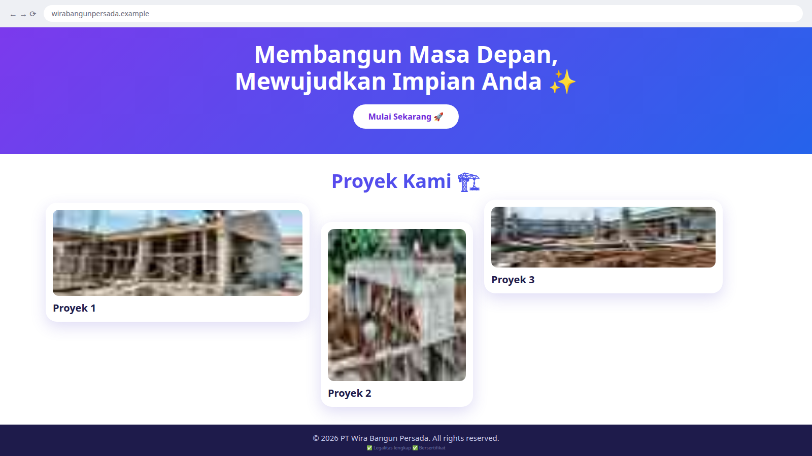
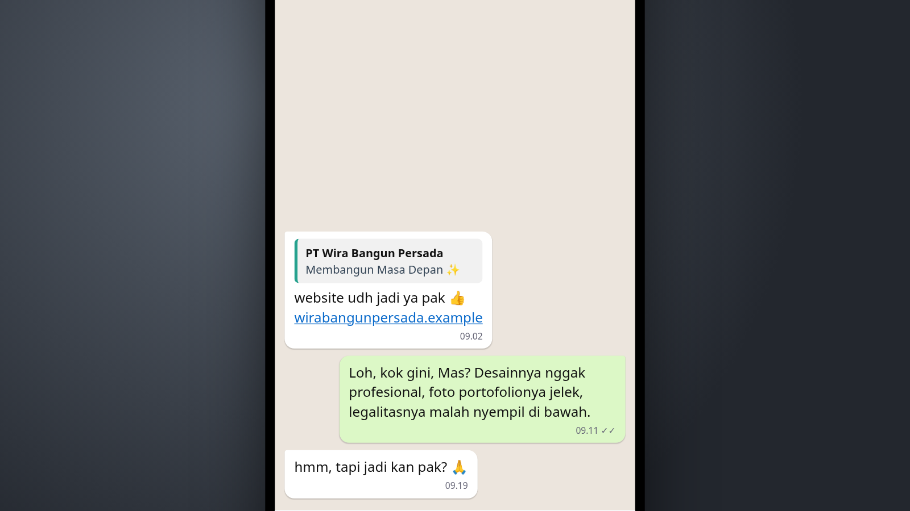
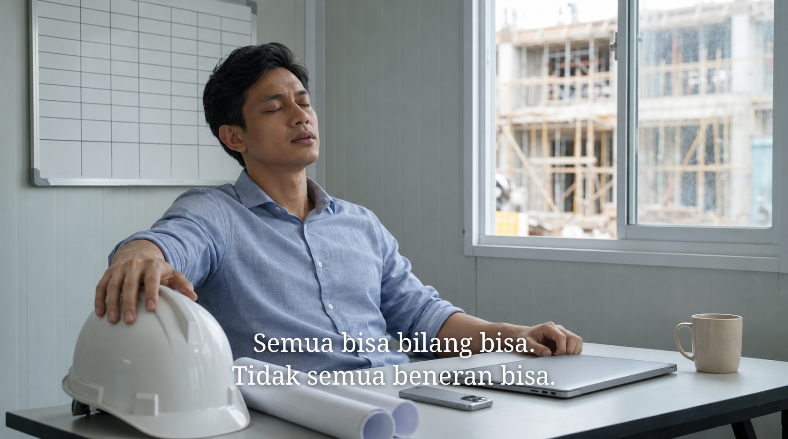

Tapi Jadi, Kan?
Visual / aksiMedium shot. Dia duduk di meja kantor proyek, mengetik di ponsel. Teks di layar: POV: mau bikin website perusahaan. Balon chat pertamanya muncul di layar.
AudioMusik pembuka yang ringan. Bunyi ketikan.

Visual / aksiInsert layar ponsel: chat dengan "Mas Dimas Web". Tanda "sedang mengetik…" hanya muncul sekejap, lalu satu jawaban panjang dan rapi masuk sekaligus (lihat percakapan di bawah). Layar bergulir pelan mengikuti tiga poinnya.
AudioMusik berlanjut. Satu "pop".

Visual / aksiClose-up wajahnya. Alis naik, mengangguk pelan. Dia terkesan.
AudioMusik berlanjut.

Visual / aksiInsert chat, tiga balon pendek bergantian: dia bertanya apakah bisa dikerjakan, Mas Dimas menyanggupi besok beres, dia bilang akan kirim foto proyek.
AudioBunyi "pop" tiap balon. Musik mengecil dan hilang.

Visual / aksiTeks di layar: Besoknya. Insert chat: "website udh jadi ya pak 👍" beserta link.
AudioNotifikasi chat.
Visual / aksiMedium shot dari samping. Dia menaruh ponsel, membuka link-nya di laptop, dan mencondongkan badan ke layar. Wajahnya penuh harap.
AudioSatu klik.

Visual / aksiInsert layar laptop: website perusahaannya. Dia scroll pelan. Gradasi ungu-biru dan emoji, foto proyek yang gepeng dan buram, legalitas yang nyempil di footer (lihat isi website di bawah).
AudioBunyi scroll.
Visual / aksiClose-up wajahnya, diterangi layar laptop. Harapannya hilang: alisnya berkerut, badannya mundur sedikit, kaget lalu kecewa. "Hah, kok gini?" Diucapkan pelan, ke dirinya sendiri. Dia meraih ponselnya.
AudioDialog. Hening.

Visual / aksiInsert chat. Dia mengetik keluhannya. Tanda "sedang mengetik…" muncul agak lama, lalu: "hmm, tapi jadi kan pak? 🙏"
AudioBunyi ketikan. Hening, lalu satu "pop".

Visual / aksiMedium shot seperti shot 1. Dia meletakkan ponsel telungkup di meja dan mengembuskan napas. "Hadeuh." Dia menutup laptop dan meraih helm proyeknya. Adegan terus berjalan di balik teks penutup.
AudioDialog. Suasana kantor proyek. Tanpa musik.
Teks penutup (di atas shot 10)
| Waktu | Teks |
|---|---|
| 00:36.5–00:39.5 | Semua bisa bilang bisa. |
| 00:37.5–00:39.5 | Tidak semua beneran bisa. |
| 00:39.5–00:41 | Imajiner |
Tipografi serif putih yang kalem, di atas adegan yang tetap berjalan. Tanpa freeze-frame, tanpa layar hitam, tanpa transisi dramatis.
Gambar adegan dibuat dengan Nano Banana dan GPT Image sebagai acuan visual, bukan frame final. Layar chat dan website adalah mockup. PT Wira Bangun Persada adalah perusahaan fiktif.